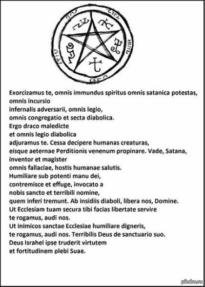

Princepsgloriosissime coelestis militiae, sancte Michael Archangele, defende nos inproelio et colluctatione, quae nobis adversus principes et potestates, adversusmundi rectores tenebrarum harum, contra spiritualia nequitiae, in coelestibus.Veni in auxilium hominum, quos Deus creavit inexterminabiles, et ad imaginemsimilitudinis suae fecit, et a tyrannide diaboli emit pretio magno. Proeliarehodie cum beatorum Angelorum exercitu proelia Domini, sicut pugnasti contraducem superbiae luciferum, et angelos ejus apostaticos: et non valuerunt, nequelocus inventus est eorum amplius in coelo. Sed projectus est draco
ille magnus,serpens antiquus, qui vocatur diabolus et satanas, qui seducit universum orbem;et projectus est in terram, et angeli ejus cum illo missi sunt.
En antiquusinimicus et homicida vehementer erectus est.
Transfiguratus in angelum lucis,cum tota malignorum spirituum caterva late circuit et invadit terram,
ut in eadeleat nomen Dei et Christi ejus, animasque ad aeternae gloriae coronamdestinatas furetur, mactet ac perdat in sempiternum interitum.
Virus nequitiaesuae, tamquam flumen immundissimum, draco maleficus transfundit in hominesdepravatos mente et corruptos corde; spiritum mendacii,
impietatis etblasphemiae; halitumque mortiferum luxuriae, vitiorum omnium et iniquitatum.
Adesto itaque, Dux invictissime,populo Dei contra irrumpentes spirituales nequitias, et fac victoriam.
Tecustodem et patronum sancta veneratur Ecclesia; te gloriatur defensore adversusterrestrium et infernorum nefarias potestates;
tibi tradidit Dominus animasredemptorum in superna felicitate locandas.
Deprecare Deum pacis, ut conteratsatanam sub pedibus nostris,
ne ultra valeat captivos tenere homines, etEcclesiae nocere. Offer nostras preces in conspectu Altissimi, ut citoanticipent nos
misericordiae Domini, et apprehendas draconem, serpentemantiquum, qui est diabolus et satanas, ac ligatum mittas in abyssum,
ut nonseducat amplius gentes.
Hinc tuo confisi praesidio ac tutela, sacri ministeriinostri auctoritate [si fuerit laicus,
vel clericus quiordinem exorcistatus nondum suscepit, dicat: sacra sanctae Matris Ecclesiaeauctoritate], ad infestationes
diabolicae fraudis repellendas in nomineJesu
Christi Dei et Domini nostri fidentes et securi aggredimur.V. Ecce Crucem Domini, fugite partes adversae.
Oremus. Deus, etPater Domini nostri Jesu Christi, invocamus nomen sanctum tuum, et clementiamtuam supplices exposcimus ut,
per intercessionem immaculatae semper VirginisDei Genitricis Mariae, beati Michaelis Archangeli, beati Joseph ejusdem beataeVirginis Sponsi,
beatorum Apostolorum Petri et Pauli et omnium Sanctorum,adversus satanam, omnesque alios immundos
spiritus, qui ad nocendum humanogeneri animasque perdendas pervagantur in mundo, nobis auxilium praestaredigneris. Per eumdem Christum Dominum nostrum. Amen.